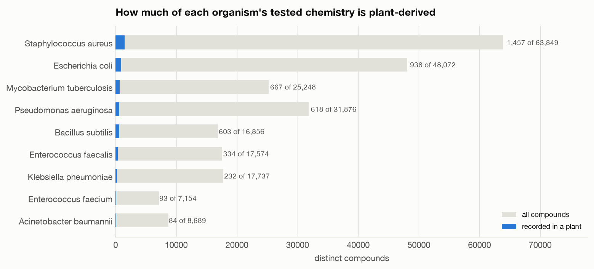
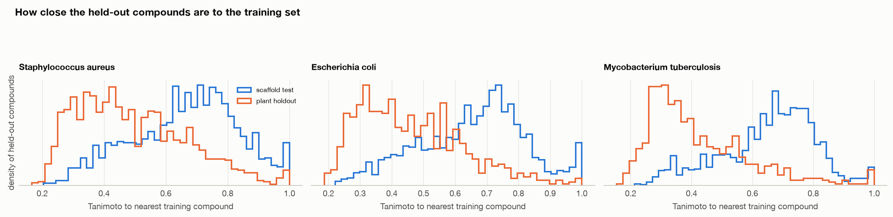
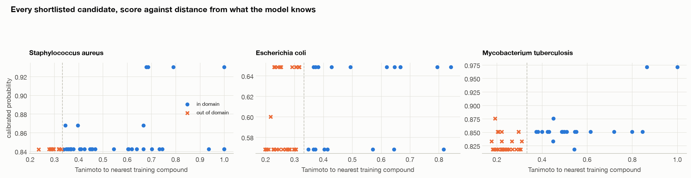

EthnoHack 2026 · Track 2 · Natural Products for Drug Discovery
Among hundreds of thousands of plant compounds, which deserve a closer look?
We took the track question literally: three bacterial pathogens, one model each,
a ranked shortlist of plant-derived compounds for the bench — and a measured account
of exactly where that shortlist stops being evidence.
Leonidas Anagnou · Eleni Nasopoulou
School of Electrical and Computer Engineering, National Technical University of Athens
Everything shown is a model prediction over published laboratory
measurements. Nothing here is a clinical claim, a statement of efficacy, or medical advice.
The problem02
Medicine has measured a great deal of chemistry against these organisms. Almost none of it came from a plant.

ChEMBL MIC pull, before curation. After curation, S. aureus has
1,424 plant-derived compounds out of 58,191 —
2.4%. Meanwhile 97,709 plant structures with a known
source organism carry no measurement against any of these three at all.
You cannot look up an experiment nobody has run. That gap is the entire
reason to predict rather than retrieve.
What we built03
Three pathogens, three different cell envelopes, one model each.
We planned per-protein models. Then we measured the download, and changed
the project to fit the data rather than the other way round.
99.6%
of MIC rows for these organisms are measured against the whole organism,
not a single protein
35
single-protein targets carry any MIC at all, median 8
compounds — too few to train on
Mycobacterium tuberculosis — acid-fast, the hardest wall and the least data
What the model therefore claims
Whether a compound stops a given bacterium growing. It says nothing
about mechanism, and we do not let it pretend otherwise. The protein layer annotates
a shortlist; it never ranks one.
How it is evaluated04
Holding out chemical scaffolds is not enough. We hold out every plant-derived compound.
We cluster first and split the clusters, so no compound and no chemical
scaffold appears on both sides of a split. The model cannot pass by having nearly seen
the answer.

Removing shared ring skeletons removes none of the resemblance that matters.
The median held-out scaffold-test compound still has a close neighbour in training
(S. aureus: Tanimoto 0.680); the median plant
compound sits far further out (0.461). Only
3.4% of plant compounds have a near-twin in training, against
13.5% of scaffold-test compounds.
That distance is the whole problem — and it is why a nearest-training
Tanimoto is printed next to every single score we ship.
What it scores05
AUROC falls on the plant holdout for every pathogen. That is the number we rank on.
Pathogen
Validation
Scaffold test
Plant holdout
95% CI
Plant base rate
P@10%
Enrichment, top 5%
Staphylococcus aureus
0.880
0.863
0.719
0.689–0.749
0.253
0.570
2.45x
Escherichia coli
0.882
0.903
0.682
0.609–0.750
0.090
0.299
5.03x
Mycobacterium tuberculosis
0.846
0.815
0.629
0.582–0.677
0.237
0.435
2.29x
What this buys a lab
Precision at the top of the list is what a chemist spends money against.
On S. aureus, 57% of the top tenth are active against a
25% base rate. On E. coli, five times the hit rate of
picking at random. The claim is not a cure. It is a shorter queue for the bench.
One thing we will not smooth over
These rungs are not a tidy descending staircase. E. coli
scores higher on the scaffold test (0.903)
than on validation (0.882). The claim we can defend is narrower
and still the one that matters: the plant holdout is consistently the hardest of the
three, for every pathogen — and it is the only one that measures what a plant
screen actually asks.
The deliverable06
Every score travels with its distance from anything the model has seen.

The dashed line is the applicability domain at Tanimoto
0.328 — not chosen for looks, but the 25th percentile of the plant
holdout, the most distant set on which we actually measured the model. Below it, candidates
are struck through: we publish them in a separate tier that states in
its own words that its scores are not evidence of activity. We do not rank them.
Per pathogen: 50 in-domain rows and 15
exploratory, each with predicted score, nearest-training Tanimoto, source plant and family,
and a literature DOI.
An unexpected observation07
The chemistry of each shortlist tracks the cell envelope it was selected against.
The model was given fingerprints and physicochemical descriptors.
Nobody told it about cell walls.
30 / 50
M. tuberculosis, acid-fast — alkaloids
(17) and terpenoids (13)
21 / 50
E. coli, Gram-negative — peptides, sugars and fatty acids
19 / 50
S. aureus, Gram-positive — shikimates and phenylpropanoids
We report this as a hypothesis worth testing, not a finding. It
partly reflects which compounds LOTUS has annotated, and three shortlists of fifty are not
enough to establish it. It is on this slide because it is the most interesting thing the
screen produced, and because the way to settle it is to go and look.
A negative result08
The thing we set out to show did not replicate. We are reporting it anyway.
The hypothesis: holding out whole plant families should be harder than
holding out chemical scaffolds, because families share biosynthesis. We measured the
gap four separate times, in a standalone experiment on
400–823 compounds — smaller than, and separate from, the
main pipeline above.
Measurement
Family − scaffold
Paired sd
Family worse in
Verdict
S. aureus
−0.073
0.067
8 of 10
direction holds
E. coli
+0.004
0.139
2 of 10
reverses
M. tuberculosis
−0.097
0.158
7 of 10
spread exceeds effect
Earlier exploratory run
−0.071
—
—
not reproduced at scale
The direction is usually negative; the magnitude never settles, and on
E. coli it reverses outright. Two of the three estimates rest on test sets of
roughly a hundred compounds, which is the likely reason they say so little.
So it goes in as an honest negative, not as our contribution — and the
cluster-level scaffold split, which does replicate cleanly on all three organisms, is what
carries the evaluation on the previous slides.
What is wrong with it09
The part we would rather a judge heard from us than found alone.
Defects in the shipped shortlists
The top-ranked candidate in all three is a near-copy of a training
compound — Tanimoto 0.986 / 0.982 /
0.976. In two of the three it is the same non-plant polyketide,
with no source plant and no DOI.
One row ships at Tanimoto 1.000, correctly flagged
as a fingerprint twin of a training compound.
Missing plant provenance on 12 /
8 / 3 of 50 rows. DOI coverage
38 / 42 / 47 of 50.
Per-compound attributions came out numerically impossible, so we
withhold that column rather than show it.
Limits of the method itself
Labels carry publication bias: most published MIC values sit at or below the active
threshold, because inactive compounds are reported less often.
No mechanism. A whole-organism readout cannot tell you what a compound binds.
Model and shortlist stages have not been independently reproduced; curation
and splits have.
No experimental validation of any kind. Not one of these compounds has been put
on a plate by us.
A screen that only reports its wins is not a result.
Reproducibility, credit, and what is next10
Every number on the site and in this deck is read from a committed result file.
57
ledger metrics re-run end to end from the raw downloads on a second
machine — all matched to the last decimal
12
pipeline stages, each writing its config hash and metrics to
results/runs.jsonl
0
numbers typed by hand into the web app; it reads
results/ at build time and retrains nothing
Data and licences
ChEMBL (CC BY-SA) — the MIC activity labels, whole-organism.
LOTUS (CC0) — the plant-to-compound edge, with references.
GBIF — cross-check of which source organisms are plants.
NPASS was evaluated and dropped: its MIC table is a copy of
ChEMBL, so we cite ChEMBL directly.
What is next
The protein layer, from the IC50 and Ki download that already exists.
The honest next step is not a fourth pathogen. It is putting ten of these on
a real plate and publishing the hit rate next to the predicted one — including if
it is worse.
The plant records carry traditional knowledge. Anything built on
this carries the Nagoya Protocol and Local Contexts with it as a condition, not a
footnote. Generative-AI assistance is disclosed in the repository README.